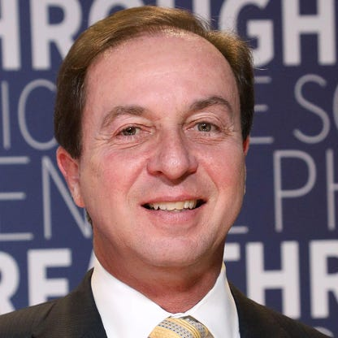
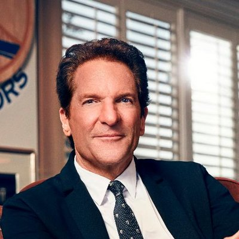

Meet the owners of the Warriors
Joe Lacob

In his role as co-executive chairman and CEO, Joe Lacob is the managing member of the Golden State Warriors’ ownership group. Beginning in 2010 in this capacity, he serves on the NBA Board of Governors and is a member of the league’s Planning Committee and Labor Committee.
Peter Guber

Peter Guber, a prominent figure in the sports and entertainment industry for more than 35 years, is owner and co-executive chairman of the Golden State Warriors. Under his leadership since 2010, the Warriors have enjoyed immense success, highlighted by four NBA Championships (2015, 2017, 2018, 2022), six Western Conference titles (2015-2019, 2022) and the recording of the greatest single season record in NBA history (73-9 in 2015-16).